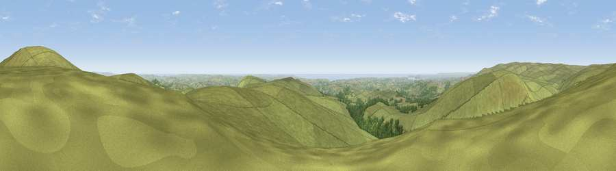

Sharp Tor
#2946 in England · top 7% of its area beats it · near DidworthyThe view, rendered

A 360° render of this exact spot computed from the terrain model, tree cover and land cover — summer colours, afternoon light, calibrated against photographs of famous viewpoints. Real trees, hedges and buildings will differ in detail.
The panorama
Grey silhouette: terrain skyline in each direction (720 bearings, Earth curvature and refraction included). Dashed green: skyline with trees (+15 m) and buildings (+8 m) as obstacles. Blue strip: how far the ground is visible on each bearing.
Where the view opens
Wedge length = distance to the farthest visible ground on that bearing (vegetation-aware). Rings at 10, 25 and 50 km.
What fills the view
87% grassland · 7% woodland · 3% water · 3% cropland ·
Angular shares of the visible panorama (visual magnitude), not map area. Landscape diversity 0.24 (0–1 Shannon).
Key numbers
More beautiful places nearby
The staircase of upgrades: each row has a higher view potential than everything closer. Driving times are estimates from straight-line distance, calibrated against real road routing — check an actual route before setting out.
| Place | Direction | Drive | Score |
|---|---|---|---|
| Three Barrows | NNE · 1 km | ~3 min | 75.9 |
| Ugborough Beacon | SE · 3 km | ~8 min | 79.5 |
| Western Beacon | S · 4 km | ~9 min | 81.9 |
| Viewpoint near Lee Moor | W · 9 km | ~18 min | 82.7 |
| Viewpoint near Hope | S · 23 km | ~38 min | 84.4 |
| Viewpoint near East Prawle | SSE · 28 km | ~45 min | 84.6 |
| Pencarrow Head | WSW · 51 km | ~72 min | 86.0 |
| Viewpoint near Lesnewth | WNW · 61 km | ~83 min | 87.7 |
50.43991, -3.90283 · source: osm peak · position refined by local search. Computed location — check access rights before visiting.